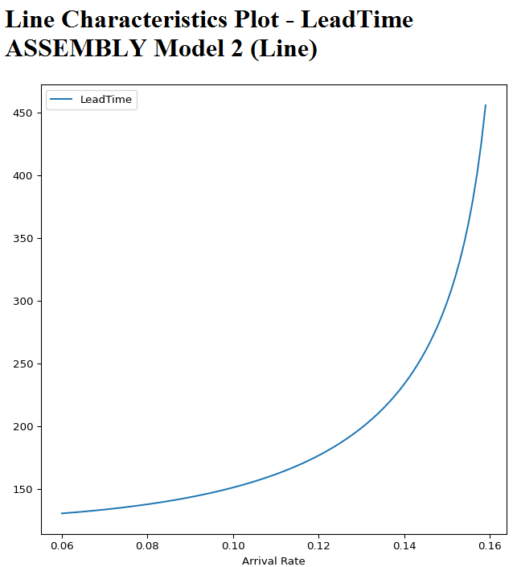

AMS Characteristics Calculation Plot
Characteristics Calculation in AMS computes essential key performance indicators for the entire manufacturing line as well as for every single Workcenter
When invoking this report the following characteristics will be plotted over Arrival Rate, Departure Rate, Daily Starts (SOB) or Daily Shipments (SHIP):
The report will provide for the entire manufacturing line:
- Throughput
- Parts per unit of time shipped
- Utilization
- Utilization
- Tot. Utilization
- Utilization at that workcenter including down times
- Leadtime
- Actual processing plus waiting time at that workcenter
- WIP
- Work In Process: average number of parts present at this workcenter - in process or waiting
- Queue Length (Mean)
- Average number of parts waiting in front of workcenter (not available when creating plot for entire manufacturing line )
- Queue Length (90 % Quantil)
- Threshold of number of parts waiting in front of a workcenter not exceeded with a probability 90 % (not available when creating plot for entire manufacturing line )
- Efficiency
- Percentage of Raw Cycle Time related to Leadtime
In addition the following cost and resource values can be plotted:
- Output Related Costs
- ...
- Time Related Costs
- ...
- Manufacturing Cost per part
- ...
- Profit per part
- ...
- Manufacturing Cost per unit of time
- ...
- Profit per unit of time
- ...
- Number Operators
- Number Operators needed
- Floor Space
- Floor Space needed
- Special Area Space
- Special Area Space needed
Example:

The characteristics to plot can be selected from the tree view on the left:

When doing a right-click a 2nd characteristics can be shown in the plot:

When doing a right-click on the tree item "Line and Workcenter Characteristics Plot" and selecting "Edit" in the menu the following dialog appears allowing to change x-Axis as well as selecting different characteristics or workcenter: